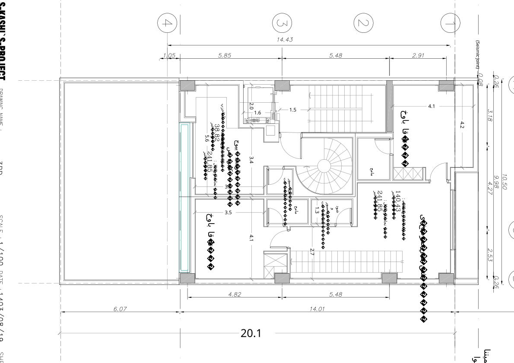

نقشه · طرح ۱۴۰۳
پلان طبقهٔ سوم
طبقهٔ سوم
بازترسیم شماتیک از روی شیت، تقریبی؛ ترازها فرضیاند.
بازترسیم شماتیک از روی شیت، تقریبی؛ ترازها فرضیاند.

{kind=link}
برداشت
باز هم دو نیمه: در گوشهٔ جنوبغربی پلهٔ مارپیچ به نشیمن واحد دانشجویی میرسد که آشپزخانهٔ کوچک خودش را دارد، و بقیهٔ طبقه، طبقهٔ شبِ دوبلکس اصلی است. نشیمن خصوصی، دو خواب که هر یک حمام خودش را دارد، و پلهای که به نشیمن اصلی در طبقهٔ بالا میرود. طبقهٔ خوابِ یک واحد بزرگ و سرِ یک واحد کوچک، در یک تراز.
با شاخصها میخواند
- شاخص ۵: دو خواب دوبلکس اصلی اینجا و مستر در طبقهٔ بالا؛ سه خواب برای خانوادهٔ بزرگ.
- شاخص ۱: آشپزخانهٔ واحد دانشجویی در دل نشیمنش، رو به حیاط.
- شاخص ۱۸: دو پلهٔ تودرتو در یک طبقه: مارپیچ واحد دانشجویی و پلهٔ داخلی دوبلکس اصلی.
چه چیزی را کم دارد
- دو حمام برای یک طبقهٔ خواب؛ به نظر صاحب زمین یادآور خوابگاه بود.
- پنجرهای به حمامها نمیرسد.
- اتاق کار مستقلی نیست؛ خواب سوم باید این نقش را بگیرد.
چه چیزی اضافه میکند
- نشیمن خصوصی کنار خوابها: جایی برای خانواده، جدا از نشیمن مهمان در طبقهٔ بالا.
- واحد دانشجوییای که نشیمن را روی خوابها میگذارد و میتواند از درون به واحد بزرگ بپیوندد.
چه پرسشی باز میماند
- ترکیب واحدها: بزرگترین واحد ساختمان از اینجا آغاز میشود؛ برای کدام خانوار؟
- بام: پلهٔ این دوبلکس به بالا میرود و بام مال همین واحد میشود؛ بقیه چه؟
چطور میشد بهتر باشد
- میشد یکی از دو حمام حذف شود و جایش به خواب یا کمد برگردد؛ یک حمام خوب بهجای دو حمام.
- میشد پلهٔ واحد دانشجویی مربع و در کنج باشد و اتاق بالا بیدیوار بماند.
- میشد دوبلکس بزرگ از دو تراز راهرو در بیاید تا پلهٔ داخلی کوچکتر شود و اثاث از راهروی اصلی برود.
جزئیات روی شیت
- «نشیمن خصوصی» بزرگ در گوشهٔ شمالشرقی: طبقهٔ پایین دوبلکس اصلی، «مساحت در طبقه: ۱۴۰٫۴۳» و «در کل: ۲۴۱٫۸۵ متر مربع».
- اتاق خواب ۴٫۲۵×۴٫۱۳ در شمالغربی و اتاق خواب ۴٫۱۱×۳٫۵۴ در جنوبشرقی، هر دو با حمام.
- «واحد دانشجویی دوبلکس» در گوشهٔ جنوبغربی با «آشپزخانه» ۵٫۶۳ و «مساحت در طبقه: ۳۸٫۸۲»؛ پلهٔ مارپیچ از پایین به اینجا میرسد.
- پلهٔ ۲٫۷۱ در ضلع شرقی: پلهٔ داخلی دوبلکس اصلی به طبقهٔ چهارم.
- «دوش و سرویس بهداشتی» ۱٫۳۰ و «سرویس بهداشتی» کنار پلهٔ مارپیچ.
- برچسب «مساحت واحد در کل: ۲۴۱٫۸۵» زیر واحد دانشجویی — همان عدد دوبلکس اصلی که اشتباهاً تکرار شده.
- خط آبی لبهٔ جنوبی جلوی واحد دانشجویی و اتاق خواب.
فضاها
دوبلکس اصلی: نشیمن خصوصی، دوبلکس اصلی: اتاق خواب (۲)، دوبلکس اصلی: حمام (۲)، دوبلکس اصلی: دوش و سرویس بهداشتی، واحد دانشجویی: نشیمن و آشپزخانه، واحد دانشجویی: سرویس بهداشتی، پلهٔ مارپیچ، پلهٔ داخلی دوبلکس اصلی، پلکان و آسانسور
یادداشت
طبقهٔ سوم دو نیمه دارد: طبقهٔ بالای واحد دانشجویی (۳۸٫۸۲ متر با آشپزخانه) و طبقهٔ پایین دوبلکس اصلی با دو خواب و نشیمن خصوصی. مجموع دو طبقهٔ واحد دانشجویی ۱۰۴٫۹۸ میشود، ولی برچسب «در کل» زیر آن ۲۴۱٫۸۵ نوشته شده که رقم دوبلکس اصلی است. حلنشده: مبلمان و آشپزخانهٔ دوبلکس اصلی نیست (به طبقهٔ چهارم موکول شده)؛ دو حمام برای یک طبقهٔ خواب که به نظر صاحب زمین زیاد بود. نسخهٔ جایگزینی (3RD-ALT) هم در بایگانی هست که اینجا نیامده. کادر عنوان: 3RD / ۱۴۰۳/۰۸/۱۹ / A3_005.